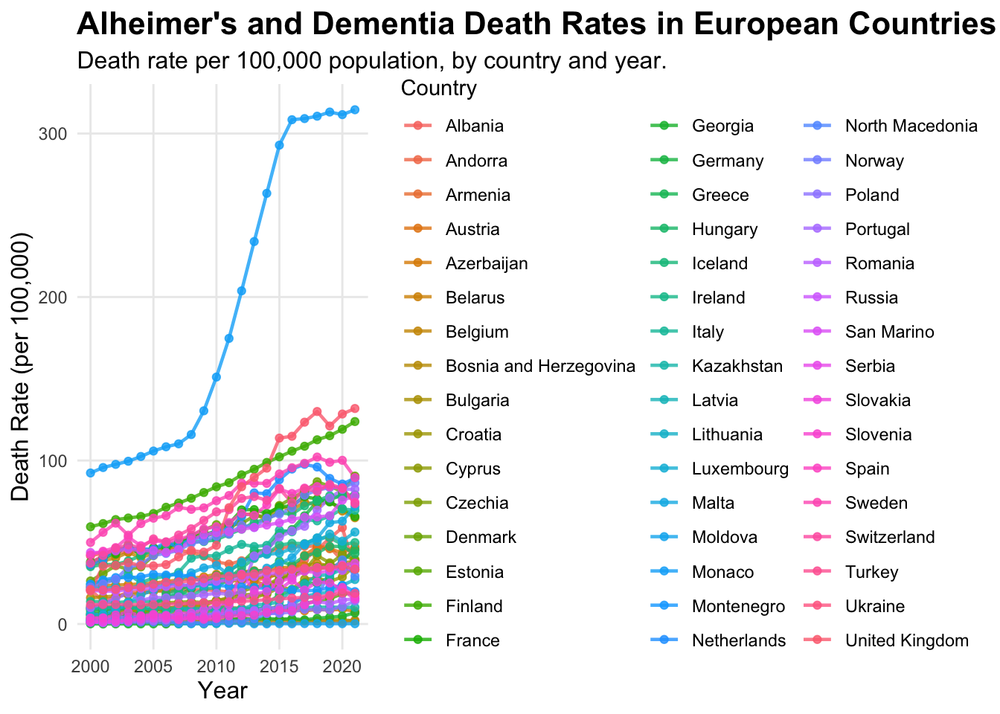
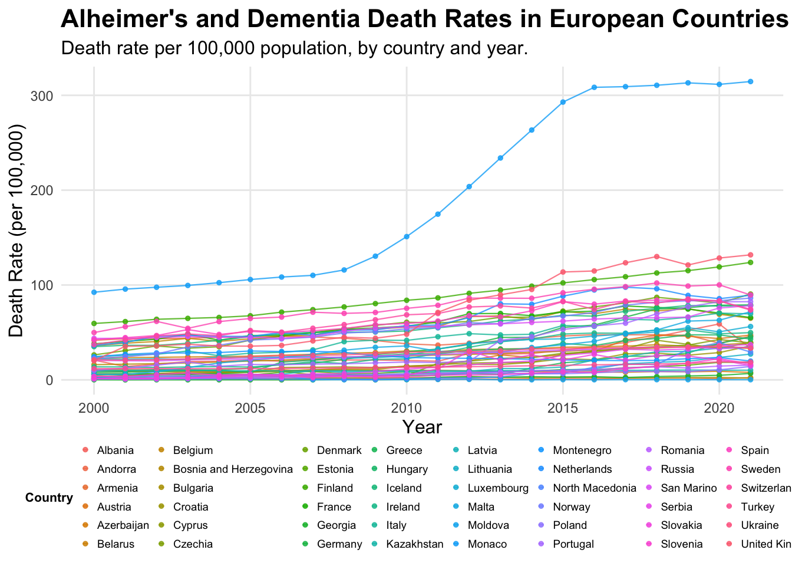
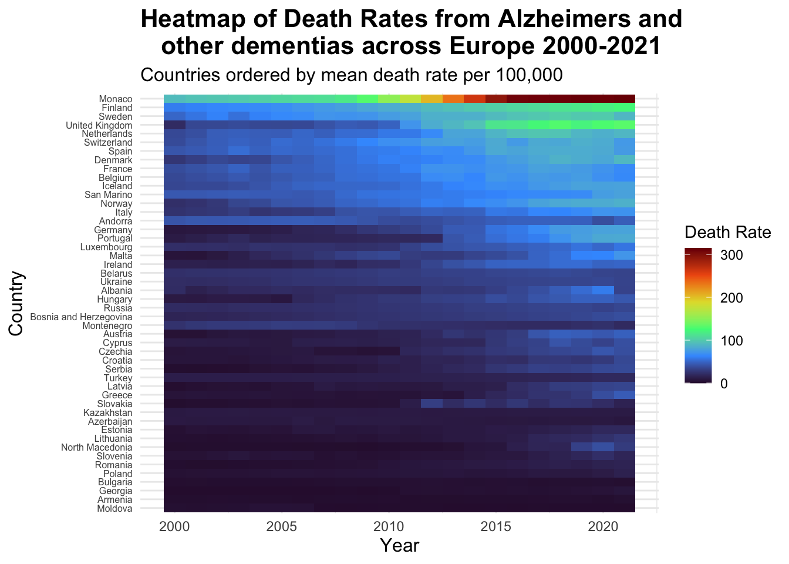

#Loading raw data into R
read_csv(here("death-rate-from-alzheimers-other-dementias-ghe.csv"))
#Reading dataset into a dataframe
df<-read.csv("death-rate-from-alzheimers-other-dementias-ghe.csv")PSY6422-FinalProject
Death rates from Alzheimer’s disease and other forms of dementia across Europe from 2000-2021.
Sophie Ryan
04/12/25
Background and Data Origins
As a postgraduate Masters student studying cognitive neuroscience and human neuroimaging I am interested in the impact of neurodegenerative diseases on health and populations. This inspired me to create a visualisation looking at how deaths from Alzheimer’s disease and other forms of dementia are increasing or decreasing and how this specifically is impacting health and therefore death rates. The raw data set was obtained from Our World Data website which provided the annual number of deaths from Alzheimer’s disease and other forms of dementia per 100,000 people from 2000 to 2021 globally, combining men and women.
A link to the data set can be accessed Here
My visualisation will focus on answering whether there has been an increase in deaths from Alzheimer’s disease and other dementia’s across Europe from the year 2000-2021 and whether one specific country has a higher death rate than others due these neurodegenerative diseases.
Research Question: “How have death rates from Alzheimer’s disease and other forms of dementia’s changed over time and how has this differed across countries in Europe?”
The Project
Data Preparation:
Before starting any data preparation the packages needing to be installed and loaded are:
tidyverse
here
dplyr
ggplot2
plotly
Loading in the raw data set before I can begin cleaning and organising.
Showing the first 10 rows of the raw data.
head(df,10) Entity Code Year
1 Afghanistan AFG 2000
2 Afghanistan AFG 2001
3 Afghanistan AFG 2002
4 Afghanistan AFG 2003
5 Afghanistan AFG 2004
6 Afghanistan AFG 2005
7 Afghanistan AFG 2006
8 Afghanistan AFG 2007
9 Afghanistan AFG 2008
10 Afghanistan AFG 2009
Death.rate.from.alzheimer.disease.and.other.dementias.among.both.sexes
1 4.62
2 4.68
3 4.73
4 4.75
5 4.81
6 4.93
7 5.05
8 4.91
9 4.83
10 4.90Data Cleaning
The current raw data includes death rates from Alzheimer’s and other dementia’s across every country in the world. I want to focus just on countries in Europe. Therefore I am going to remove the rows that are irrelevant to my analysis and save a new data set with just the death rates from Alzheimer’s and other dementia’s across Europe from 2000-2021.
#1. Define a vector of European countries to give me something to reduce my raw data based upon, this was quite tedious but i couldnt find a better way of doing this with such a large data set
european_countries<- c(
"Albania", "Andorra", "Armenia", "Austria", "Azerbaijan",
"Belarus", "Belgium", "Bosnia and Herzegovina", "Bulgaria",
"Croatia", "Cyprus", "Czechia", "Denmark", "Estonia", "Finland",
"France", "Georgia", "Germany", "Greece", "Hungary", "Iceland",
"Ireland", "Italy", "Kazakhstan", "Latvia", "Lithuania", "Luxembourg", "Malta", "Moldova", "Monaco", "Montenegro", "Netherlands", "North Macedonia", "Norway", "Poland", "Portugal", "Romania", "Russia", "San Marino", "Serbia", "Slovakia", "Slovenia", "Spain", "Sweden", "Switzerland", "Turkey", "Ukraine",
"United Kingdom"
)
#2. Filter the data frame
#Use the function 'filter' to keep all rows where the value in the "Entity" column is also present in the 'european_countries' vector that was created
europe_alzheimers_df<-df %>%
filter(Entity %in% european_countries)
#3. Displaying first few rows of the new data frame to check it has removed the relevant data
print(head(europe_alzheimers_df)) Entity Code Year
1 Albania ALB 2000
2 Albania ALB 2001
3 Albania ALB 2002
4 Albania ALB 2003
5 Albania ALB 2004
6 Albania ALB 2005
Death.rate.from.alzheimer.disease.and.other.dementias.among.both.sexes
1 20.83
2 14.04
3 16.57
4 19.36
5 19.53
6 20.77#4. Counting the number of rows in the original data frame and the new data frame to check that the intended rows were removed
print(paste("Original rows:", nrow(df)))[1] "Original rows: 4422"print(paste("European rows:", nrow(europe_alzheimers_df)))[1] "European rows: 1056"#5. Saving the new data set with just European countries in it
write.csv(europe_alzheimers_df, "european_alzeimers_deaths.csv", row.names = FALSE)
#6 Viewing the new clean data set in a table format
view(europe_alzheimers_df)
#7 Renaming columns
europe_alzheimers_deaths<- europe_alzheimers_df %>% #creating final data set vector
rename(Country = Entity, #renaming the original column name as 'Country'
DeathRate = Death.rate.from.alzheimer.disease.and.other.dementias.among.both.sexes)
#8 Viewing final clean data set
view(europe_alzheimers_deaths)Data Visualisation 1
#Creating a simple line graph to see how my data might be visualised
ggplot(
europe_alzheimers_deaths,
aes(x = Year, y = DeathRate, colour = Country, group = Country)) +
#Adding x and y axis and grouping data points by country
geom_line() + #adding the line
labs (title = "Alzeimers deaths by European country from 2000-2021",
x = "Year",
y = "Number of Deaths",
colour = "Country") +
#adding title and labels for x and y axis and assigning a different colour for each country
theme_minimal()
This was just a basic line graph for me to get an idea on how I can work with the data I have and what sort of graph I could create. This one is very simple and I don’t like the proportions and it does not look that great in terms of positioning, colour and just general visability so I am going to try and advance this visualisation into something clearer and more precise.
alzheimer_plot<- ggplot( #assigning the plot a name
data = europe_alzheimers_deaths, #calling the data
aes(
x = Year,
y = DeathRate,
group = Country,
colour = Country
) #adding x and y axis and grouping values by country and assigning a default colour palette giving a different colour for each country
) +
geom_line(
linewidth = 0.8, #setting thickness of lines
alpha = 0.8 #controlling transparency of the lines
) +
geom_point( #adds data points across the lines
size = 1.5,
alpha = 0.8
) +
labs(
title = "Alheimer's and Dementia Death Rates in European Countries Over Time",
subtitle = "Death rate per 100,000 population, by country and year.",
x = "Year",
y = "Death Rate (per 100,000)",
colour = "Country"
) + #labelling the graph
theme_minimal() +
theme(
plot.title = element_text(size = 16, face = "bold"), #changing size of title and making it bold
plot.subtitle = element_text(size = 12), #assigning text size to the subtitle
axis.title = element_text(size = 12), #assigning text size for the axis labels
legend.position = "right", #making the position of the legend on the right of the graph
panel.grid.minor = element_blank() #hiding minor grid lines
)
print(alzheimer_plot) #showing the graph 
This graph is better in terms of visual appearance, labels and detail, but the legend is too big and the graph is squashed. The colours of the lines and points are too similar and there’s just too much going on in the graph to read the data clearly, so its still unclear.
alzheimer_plot<- ggplot(data = europe_alzheimers_deaths, #calling the data
aes(
x = Year,
y = DeathRate,
group = Country,
colour = Country,
#adding x and y axis, grouping by country and making each country a different colour, I couldn't find a colour palette that covers enough colours to assign a different clear colour to each country better than the default - this is an issue with this type of graph i started to realise
)) +
geom_line(
linewidth = 0.4,
alpha = 0.8
) +
geom_point(
size = 1.0,
alpha = 0.8
) + #assigning line and point width and transparency
labs(
title = "Alheimer's and Dementia Death Rates in European Countries Over Time",
subtitle = "Death rate per 100,000 population, by country and year.",
x = "Year",
y = "Death Rate (per 100,000)",
colour = "Country"
) + #labelling titles and axis
theme_minimal() +
theme(
legend.position = "bottom", #changing legend position to underneath the graph to make the graph less squashed
legend.direction = "horizontal",
legend.text = element_text(size = 7), #assigning text size inside the legend
legend.title = element_text(size = 8, face = "bold"), #assigning title text size
legend.key.size = unit(0.3, "lines"), #making the key size smaller
legend.box.margin = margin(t = -15, r = 0, b = 0, l = 0), #decreasing amount of empty space around the legend
legend.box.spacing = unit(0.5, "cm"), #changing space between the legend and the graph
plot.title = element_text(size = 16, face = "bold"),
plot.subtitle = element_text(size = 12),
axis.title = element_text(size = 12),
panel.grid.minor = element_blank()
) + #assigning text size for labels and titles and removing minor grid lines
guides(colour = guide_legend(ncol = 8)) #organising legend into 8 columns to make it as small in height as possible
print(alzheimer_plot)After experimenting with the line graphs, I decided this data is too dense and although this final visualisation is better for readability i think it is still quite unclear and the data is all squashed together at the bottom, with similar colours, making them difficult to read and distinguish between. Therefore I decided to create a heat map which is better for dense data sets to see if this would be a better visualisation.
Data Visualisation 2
alzheimers_heatmap<- europe_alzheimers_deaths %>% #naming the graph
mutate(Country = fct_reorder(Country, DeathRate, .fun = 'mean')) %>% #reordering data by each countries' mean death rate to make the visualisation clearer with the changes in colour
ggplot(mapping = aes(x = Year, y = Country, fill = DeathRate)) + #adding x and y axis and what the data is being grouped by
geom_tile() +
scale_fill_viridis_c(option = "turbo") + #adding colour palette
labs(title = "Heatmap of Death Rates from Alzeimers and
other dementias across Europe 2000-2021",
subtitle = "Countries ordered by mean death rate per 100,000",
x = "Year", y = "Country", fill = "Death Rate") + #labelling title and axis and legend
theme_minimal() +
theme(
plot.title = element_text(size= 16, face = "bold"),
plot.subtitle = element_text(size = 12),
axis.title = element_text(size = 12),
axis.text.y = element_text(size = 6))
#adjusting size and look of text and labels on the graph
alzheimers_heatmap #viewing the heatmap
I think this heat-map is a great way to view the type of dense data that I chose. From this you can clearly see each country name separately and each colour is clear making the graph easy to read, including a clear colour legend. This also highlights very well the much higher death rates in Monaco and the drastic increase in the death rates in this country from 2010 - 2020. Additionally, we can see how death rates have increased over the years as the colours become lighter approaching 2020, with the highest death rate countries grouped at the top. This is a much better way to visualise this data and make it easier to read whilst also being pleasing to look at.
Lastly to complete my final visualisation i want to make this graph interactive.
Final Visualisation
alzheimers_heatmap<- europe_alzheimers_deaths %>% #naming the graph
mutate(Country = fct_reorder(Country, DeathRate, .fun = 'mean')) %>% #reordering data by each countries' mean death rate to make the visualisation clearer with the changes in colour
ggplot(mapping = aes(x = Year, y = Country, fill = DeathRate)) + #adding x and y axis and what the data is being grouped by
geom_tile() +
scale_fill_viridis_c(option = "turbo") + #adding colour palette
labs(title = "Heatmap of Death Rates from Alzeimers and
other dementias across Europe 2000-2021",
subtitle = "Countries ordered by mean death rate per 100,000",
x = "Year", y = "Country", fill = "Death Rate") + #labelling title and axis and legend
theme_minimal() +
theme(
plot.title = element_text(size= 16, face = "bold"),
plot.subtitle = element_text(size = 12),
axis.title = element_text(size = 12),
axis.text.y = element_text(size = 6))
#adjusting size and look of text and labels on the graph
#Making it interactive
ggplotly(alzheimers_heatmap)